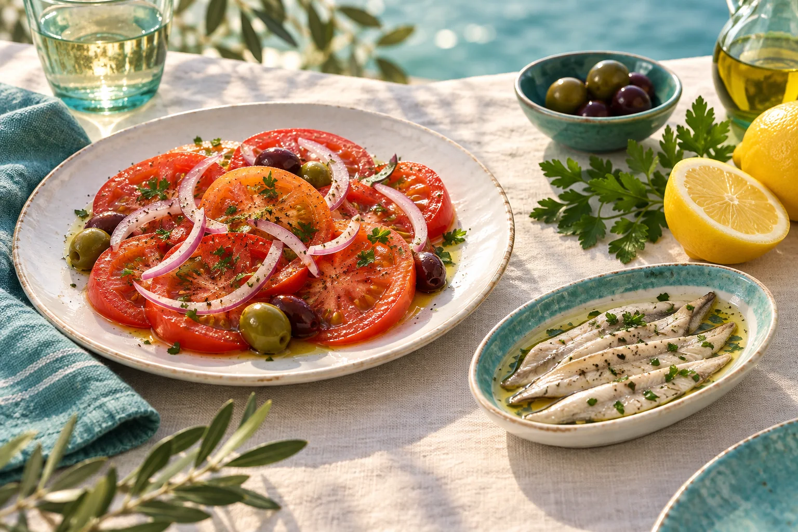
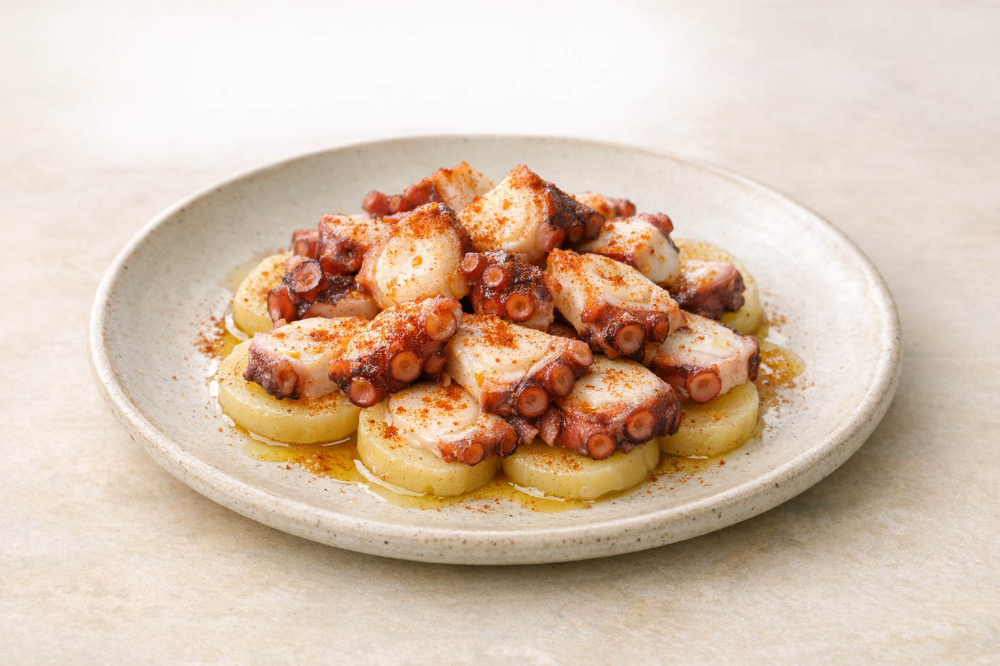

01
Ensaladas
Tomate con Cebolla
6.50 €Ensalada de Aguacate con Gambas
12.50 €Ensalada del Chef
11.00 €
02
Entrantes y sardinas
Ensaladilla Rusa
7.50 €Boquerones en Vinagre
12.50 €Pulpo a la Gallega
16.90 €Sardinas
7.00 €